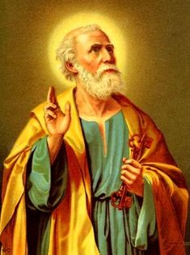
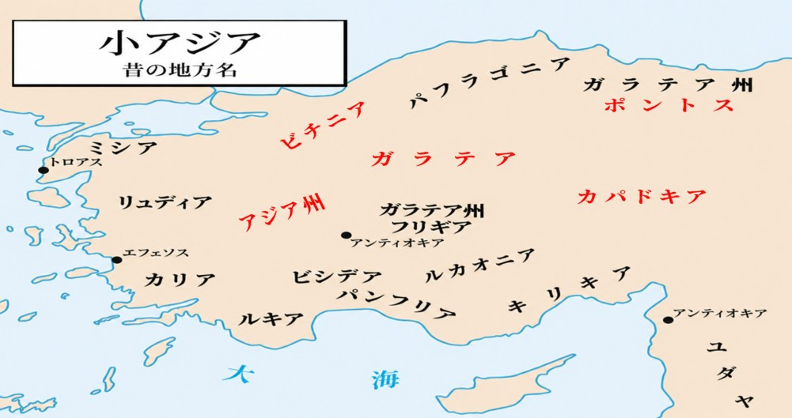

ペトロの生涯が終わりに近づくとき、私たちは彼の言葉を、単なる教えとしてではなく、「生涯を通して主に従った者の証し」として受け取ることになる。
ペトロの手紙一とペトロの手紙二は、まさにそのような晩年の信仰の結晶とも言える書簡である。まず、『ペトロの手紙一』から見て行くことにする。
『ペトロの手紙一』は、様々な試練や苦難に直面して悲しんでいるキリスト者、これから起ころうとしている大きな迫害を前にしているキリスト者を慰めるとともに、堅く信仰に立って苦しみを受けられたイエスの足跡に従うように勧めている手紙である。
1章1節には、小アジア地方の多数のローマの属州の名が記されている。ということは、手紙の受け取り手たちは現在のトルコの地域に居住していたことになる。彼らの大多數は異邦人(つまりユダヤ人ではない) キリスト信仰者であったと思われる。手紙の成立時期を正確に知るのは困難である。唯一の手がかりは迫害である。当時、キリスト者たちは各地で社会的な憎悪や圧迫を受けていた。後の大規模な迫害の時代を前にして、すでに苦難の空気が広がっていたのである。
であるから、この手紙は最初の大規模な迫害の起こる以前に書かれていた可能性がある。
この手紙を書き取ったのはシルワノという名の人物である (5章12節)。多くの研究者は、シルワノ (Silvanus) は、パウロの古くからの同僚で共に牢獄生活を送ったシラス (Silas) とは同一人物である可能性が高いと考えている。

ペトロの手紙の宛先（赤字）
ヨナの子シモンはガリラヤの漁師で、カペナウムに定住していた。イエスにティベリア湖畔に召され、彼はペトロ (ケファ、「岩」)となった。イエスはペトロの上に教会を建てたいと宣言された。ペトロは、イエスが地上におられたときは十二使徒の筆頭にあげられていた。福音書は、ペトロの熱烈な信仰と弱さの両方を物語り、受難前の三度の否認、それに続く悔い改め、そして「わたしの羊を養いなさい」 という使命を語っている。イエスが昇天され、聖霊が降臨された後も、使徒たちと兄弟たちの中で指導的な立場にいて、ユダヤ人の全教会を指導する長老になっていた。それは彼に指導者としての賜物があったからである。
しかしイエスが地上におられた時のペトロは、その賜物がわざわいし、いつも人の先に立とうとして出過ぎたまねをし、失敗を重ねていた。例えば水の上を歩いて沈みかけたり、受難と死と復活の予告をされたイエスを諫めたり、イエスの苦難の意味を理解せず警告を無視して虚勢を張り、イエスを否認したりした。それは高慢な心で人を支配しようとし、謙遜が身についていなかったからである。
しかし、晩年のペトロは、エルサレムで説教し、キリスト教共同体を設立して、長老たちを指導する立場になっていたが、自分の数々の失敗を反省し、自戒しながら、割り当てられている人たちを支配しようとする高慢な心を悔い改め、神の力強い御手の下にへりくだり、群れの模範となるように長老たちに勧めたのである。
この手紙は、一世紀の苦難に遭っているキリスト者を励まそうと記されたものである。彼らには希望が与えられていたが、ペトロはそれを確認させている。一世紀はまだキリスト者は完全なる少数派であった。一世紀はローマ帝国の住人の10分の1がユダヤ教徒であったと言われている。キリスト教はユダヤ教から敵視されていた。また異教徒たちからも敵視されていた。ローマ帝国挙げての迫害も厳しくなっていたので、希望がなければ確かな足取りで生きていくことは困難だったのである。
ペトロは1~2節の冒頭の挨拶では、地上で苦難を受けている彼らに対して、あなたがたは神に選ばれた人々ですよ、と神の選びを強調して、神の愛を確信させて励ましている。
1章3節~12節では、特に、彼らに希望を持たせようとしていることがわかる。具体的には、天の御国に救い入れられる希望である。地上で苦難を受けているあなたがたは、すばらしい希望に目を留めるのだよと励ましている。希望は生きる力になるからである。
ペトロは3節で、神はどのようにして生ける望みを持つようにしてくださったかを説明している。
「神は豊かな憐れみにより、わたしたちを新たに生まれさせ、死者の中からのイエス・キリストの復活によって、生き生きとした希望を与え、また、あなたがたのために天に蓄えられている、朽ちず、汚れず、しぼまない財産を受け継ぐ者としてくださいました。」
注意して見ると、生ける望みの前提として、キリストの復活によって私たちが新しく生まれ変わることができたのは、神の大きな憐れみであることが言われている。これはペトロの実感である。ペトロはかつて、キリストを裏切るという大失態を演じた。捕縛されたキリストを横目に、あんな男は知らないと三度も否定した。ペトロたちに見捨てられたキリストは、血まみれになって十字架の上で果てることになる。俺はなんていうことをしてしまったのか、最低の人間だ、取り返しのつかない過ちを犯した。ペトロの絶望感はどれほどのものであっただろうか。心は暗黒状態。どんなに自分を責めても、もうどうにもならない。ペトロは深い絶望の淵に沈んだかもしれない。希望なんていうものはもうない。精神的にはお先真っ暗。あるのは絶望感のみ。けれども、三日後のキリストの復活がすべてを払拭してしまう。「死者の中からのイエス・キリストの復活によって」と、これがキーになることばである。このキリストの復活がなかったら、ペトロの人生は終わっていた。けれども、キリストの復活がペトロの心もたましいも人生も、新しく再生してしまった。ペトロは新しい人として人生の再スタートを切れた。そして一時的な苦難の後に待つ天の御国を待ち望む者となれた。キリストの復活はペトロに最大のインパクトをもたらした。復活したキリストはペトロを責めることなく、愛をもって包み、改めて彼に福音を説き明かし、弟子として彼に再召命を与え、生ける望みを与えた。
ペトロの手紙の受取人たちは、下層階級の者たちが多く、公民権を持たない者たちや奴隷もいたと思われるが、「新しく生まれさせて」ということば自体、力となったはずである。つまり神の子とされたということでもあるので。この身分は王家に生まれたということと比較できる。いや、それ以上のことで、この上もない喜びであった。
5節では、生ける望みは「終わりのときに現されるように用意されている救い」 として表現されている。「救い」というときに、聖書は未来にいただく救いと、現在いただいている救いの両方を伝えている。5節の救いは、天に召された時に受ける完全な報いが意識されての表現である。9節でも「救い」 について言われているが、そこでは現在受けている救いのことである。私たちはすでに救われているが、まだ天に召されているわけではない。地上では今しばらくの間、苦しみも経験しなければならないが、この地上にあって「生ける望み」が私たちを支えてくれる。
ペトロは生ける望みから来る喜びを語った後、続く8節で、キリストご自身が喜ぶ対象であることを語っている。「あなたがたはイエス・キリストを見たことはないけれども」で始まっているが、ペトロはイエス・キリストを見た。キリストと三年間寝食を共にし、見続けた。でも手紙の受取人たちは、一度もキリストを見ていない。にもかかわらず、愛しており、信じており、ことばには言い表せない、大いなる喜びをもっている。彼らは、キリストが弟子のトマスに言われたことば、「あなたはわたしを見たから信じたのですか。見ずに信じる者は幸いです」 (ヨハネ20章29節)の幸いに与り、救い主キリストを人格的に、霊的に知って、喜び踊る者となった。「栄えに満ちた喜びにおどっています」。
著者の私もキリストを信じた時、飛び上がって喜んだ。ペトロは9節で「これは、信仰の結果である、たましいの救いを得ているからです」と述べているが、救いとは、キリストとの出会いがもたらすものなので、キリストが私たちの喜びと言えるのである。
5章でペトロが長老たちに語った、「あなたがたにゆだねられている、神の羊の群れを牧しなさい」という言葉は、主イエスご自身がほかならぬぺトロに語った言葉なのである。
ヨハネによる福音書によれば、復活された主イエスはペトロに出会ったとき、「わたしを愛しているか」と尋ねられた。ペトロが「はい、主よ、わたしがあなたを愛していることは、あなたがご存じです」と答えると、主イエスは「わたしの (小) 羊を飼いなさい」と命じられた。主イエスは三度、「わたしを愛しているか」とペトロに尋ね、三度とも同じように答えるペトロに、三度「わたしの羊を飼いなさい」と命じられたのである。
ペトロは、長老たちに三つの勧めを行っている。
長老への三つの勧めの第一は、神の召しに応えて神に従って、「強制されてではなく、神に従って、自ら進んで世話をしなさい」である。
第二は、神に対する熱心さによって、「卑しい利得のためにではなく献身的にしなさい」である。
第三は、神からゆだねられている人々へ、「ゆだねられている人々に対して、権威を振り回してもいけません。むしろ、群れの模範になりなさい」である。
第一の、「強制されて」とは、神からの召命なしに、と言い換えることができる。誰かから「あなたは長老をしなさい」と強いられて長老になるのではない。
第一の勧めは神の召しにお応えして、神に従って教会を牧しなさい、と言われている。
第二は、神に対する熱心さによって、「卑しい利得のためにではなく献身的にしなさい」である。「利得のために」とは、単に金銭的な利益を得るためにということにとどまらず、自分の利益のために、自分のためにということである。であるから第二の勧めは、根本的には第一の勧めと同じことを見つめていて、長老は自分の利益のためではなく、献身的に教会に仕えることが勧められているのである。「献身的に」とは「熱心に」 ということであるが、その熱心は、なによりも神に対する熱心でなくてはなりません。
第三は、神からゆだねられている人々へ、「ゆだねられている人々に対して、権威を振り回してもいけません。むしろ、群れの模範になりなさい」 と言っている。権威を振り回すのではなく、群れの模範となれと言われているが、「ゆだねられている人々」という言葉にも注目したいと思う。この言葉は元々「くじ」を意味する言葉である。「くじを引く」の「くじ」である。小アジアにおいて、長老はある地域やある教会を牧する務めを託されていたようであるが、その地域や教会は長老自身が選ぶのではなく割り当てられていたようである。自分で選ぶのではなく神のみ心によって割り当てられることが、「くじを引く」という言葉に見つめられている。ですから「ゆだねられている人々」とは、神のみ心によってゆだねられている人々ということにほかならない。第三の勧めは、長老が自分の親しみやすい人だけを牧するのではなく、そのときそのとき神から委ねられている人々を牧して、その人々の模範となることを勧めているのである。
かつてペトロは主イエスの十字架を前にして、三度主イエスを知らないと言い、主イエスを裏切った。そのペトロに主イエスは同じく三度「わたしを愛しているか」と尋ねられたのである。それは、ペトロ自身の主イエスへの愛の深さを証明するためでも、主イエスに従って生きる覚悟が十分であることを証明するためでもありません。「はい、主よ、わたしがあなたを愛していることは、あなたがご存じです」とは、「主が私を愛してくださるから、私は主を愛することができる。そのことを主はご存じです」ということだからである。ペトロは自分自身の中には主イエスを愛する愛をこれっぽっちも持っていなかったことを分かっていた。しかし主イエスは十字架で死なれることによって、ご自分を裏切ったペトロを、取り返しのつかない罪を犯したペトロを赦してくださったのである。この主イエスの愛に包まれているから、自分自身の中には主イエスへの愛を持つことができなかったけれども、ペトロは主イエスを愛することができるようになったのである。
ペトロは、長老たちに「あなたがたにゆだねられている、神の羊の群れを牧しなさい」と命じている。罪人である自分のために主イエスが十字架で死んでくださった。この主イエスの愛によって長老たちが生かされているから、ペトロは「あなたがたにゆだねられている、神の羊の群れを牧しなさい」と命じているのである。誰よりも自分自身には神の羊の群れを牧する力も愛もないことを知っていたペトロが、自分と同じように長老たちが主イエスの愛によって包まれていることを信じるゆえに、このように命じているのである。
このように主イエスの愛によって生かされ、委ねられた務めを担う長老たちへの約束が4節で、このように語られている。「そうすれば、大牧者がお見えになるとき、あなたがたはしぼむことのない栄冠を受けることになります」。大牧者とは主イエス・キリストのことであるから、「大牧者がお見えになるとき」とは、主イエス・キリストが再びこの世に来てくださるときであり、世の終わり、救いの完成のときである。そのとき 「しぼむことのない栄冠」を受ける、つまり救いの完成にあずかり、復活と永遠の命にあずかるという大きな報いが、長老たちに約束されているのである。地上の歩みにおいては、長老は報われないことが多いかもしれません。教会のために、委ねられている人々のために献身的に仕える中で、多くの労苦を担い、多くの問題に直面し、ときには周りから理解されず、あるいは自分の弱さや欠点ゆえに苦しむことがあるに違いありません。しかしそれにもかかわらず、自分自身の力によってではなく主イエスの愛によって支えられ、長老としての務めを担う者たちに、救いの完成のときに、「しぼむことのない栄冠」を受けるという大きな報いが約束されているのである。
ここまで読み進めてやはりこの箇所の中心は長老への勧めではないか、と思われるかもしれません。しかし5節にこのようにある、「同じように、若い人たち、長老に従いなさい」。若い人たちとは、年齢の若い人ということではなく、洗礼を受けてから間もない人、信仰生活の短い人ということでしょう。その人たちは長老の導きに従いなさいと言われているのである。さらに続けて、「皆互いに謙遜を身に着けなさい」と言われている。5節でペトロは、長老たちにだけでなく、若い人たちにだけでもなく、すべてのキリスト者に向かって、「互いに謙遜を身に着けなさい」と語っているのである。
私たちは謙遜と言われると、賜物が与えられていても、自分は何もできないかのように、大したことはできないかのように言ったり、振る舞ったりすることだと思いがちである。日本ではこのような謙遜が美徳であるとすら考えられている。しかし「互いに謙遜を身に着ける」とは、私たちが互いに「いえいえ、自分は大したことはできませんので、つまらない者なので」と言い合うことではない。ペトロが言う謙遜とは、自分に与えられている賜物を隠して振る舞うことではなく、神に対して謙遜であることである。神の前にへりくだる者だけが、人の前でもへりくだることができる。
ペトロは、互いに謙遜を身に着けるのは、「神は、高慢な者を敵とし、謙遜な者には恵みをお与えになる」からだと語る。この神の前にへりくだり、自分を低くして生きることこそ、主イエスが残してくださった模範に違いない。主イエス・キリストは神の子であり、ご自身が神であったにもかかわらず、ご自身を低くして私たちと同じ人となってくださり、神のみ心に従って十字架で死なれ、陰府にまで降ってくださった。キリストは神の前に徹底的にへりくだって生きられたのである。とことん低くなってくださったのである。このキリストの足跡に続き、私たちも神の前にへりくだって生きるのである。神に対してへりくだって生きることによってこそ、私たちは互いにへりくだって生きることができるようになるのである。
この手紙が書かれた時代がそうであったように、今、私たちの教会も危機の中にある。その中で私たちになによりも求められていることは、神に対してへりくだり、互いにへりくだって生きることである。私たちが互いにへりくだって生きるところにこそ、主イエス・キリストを中心とした本当の交わりが与えられていくのである。危機の中にあっても、互いに謙遜を身につけ、互いにへりくだって生きることによって、私たちはキリストを土台とした教会を建て上げていくことができるのである。
このように晩年のペトロは、主に従うものとして円熟した信仰を示し、ユダヤ人の全教会を指導する長老たちに、群れの模範となるように勧めたのである。